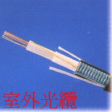

光纖系列產品 (Fiber Optic Cables)
宏翔科技提供高品質單模 (Singlemode) 與多模 (Multimode) 光纜，適用於主幹佈線、區域網路及 FTTH 等多種應用環境。
光纜分類 (Cable Categories)

室內光纜 (Indoor)
緊緻緩衝結構
適用於水平佈線與垂直主幹，具備優異的柔軟度與抗拉性能。

室外光纜 (Outdoor)
防水與鎧裝結構
具備防潮、防鼠咬及耐候特性，適用於管道、直埋或架空施工。
品質保證 (Quality Assurance)
- 所有光纖產品均符合 ITU-T 與 TIA/EIA-568 國際標準。
- 提供低衰減、高頻寬的數據傳輸性能。
- 核心材質通過嚴格 QC 檢驗，確保光纖鏈路穩定可靠。
需要查看光纖終端收容設備？
查看光纖收容箱 (Enclosures) →